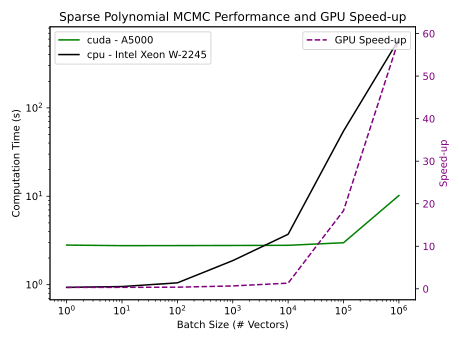

Research Statement
My research mainly focuses on algorithm analysis, software development, and algorithm design for engineering. This can either be outcome-focused or tool-focused. For outcome focused research, I find an impactful problem, like search and rescue games, package delivery, renewable energy, etc., and optimally solve a rigorous version of the problem by applying complexity reductions or mathematical insights. Sometimes, I am surprised and the problem is solvable in polytime or can be bounded under realistic assumptions. Most of the time, outcome-driven problems are NP-Hard so optimal algorithms don't exist. This brings us to tool-focused research. My tool-focused research focuses on solving optimization problems using fast heuristics through GPUs, quantum solvers, and generative AI approaches that can be applied to heuristically solving NP-Hard problems. Outside of optimization problems, my tools-focused research also applies to software for Linux utilities, transpilers, website development, and many other applications.
GPU Heuristics
Highly parallel GPU's require a different approach to optimization algorithm design. They also make beautiful art. (Play the shader below using the play button hidden in the bottom left corner of the iframe)
GPU hardware is the workhorse that takes responsibility for the above shader, ChatGPT and Stable Diffusion away from slow CPU's. GPU's are built around Single Instruction Multiple Data (SIMD) operations, or parallel operations acting on vectorized data.
Using GPU's for optimization problems is a natural fit. The parallel nature of the hardware allows for many optimization algorithms to be parallelized with careful consideration of the operations. The image below shows the speedup of a GPU over a CPU for a sparse matrix-vector multiplication.

That's why I've built the following two packages to integrate physics and engineering-based applications into the GPU and ML ecosystem.
Polytensor
Python package for CUDA-accelerated, autograd friendly polynomial evaluation.
nanomcmc
Python package for CUDA-accelerated, autograd friendly MCMC.
Markov Chains
Markov Chains are a powerful tool for modeling complex systems. They are used in a wide range of applications, including physics, biology, economics, and computer science. I've built a package to integrate Markov Chain Monte Carlo (MCMC) simulations into the GPU and ML ecosystem through nanomcmc. Markov chains are also useful for analysis of logistics applications, search and rescue missions, and package delivery. In the following paper, I worked with the AFRL to define infinite horizon games for package delivery problems. Markov chains were incredibly useful for proving optimal algorithms.